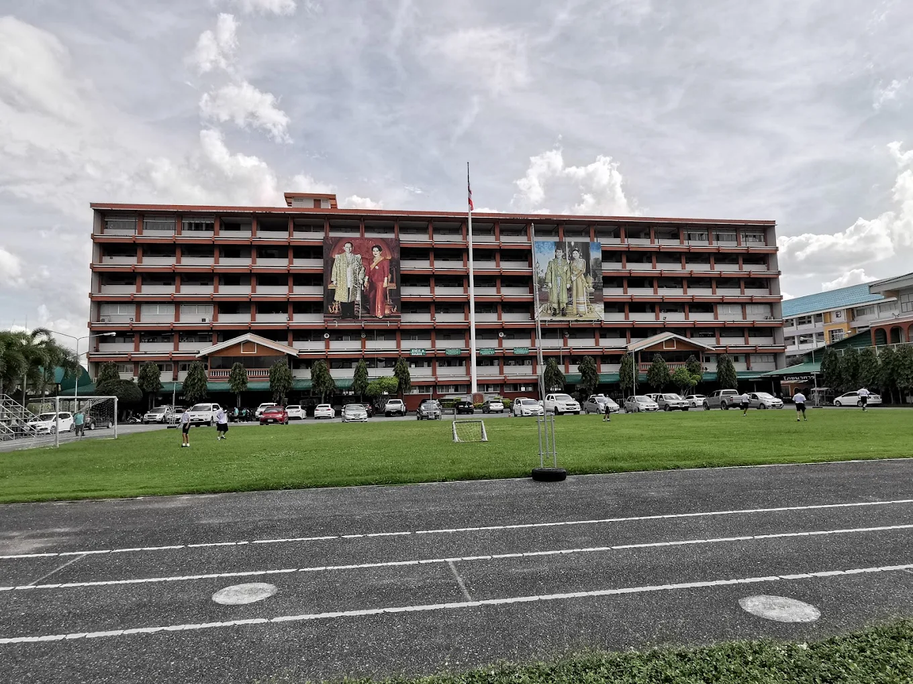

02 / EDUCATION
EDUCATION
เส้นทางการเรียนรู้ของผม

มัธยมศึกษาตอนปลายMSEP
โรงเรียนบ้านบึง “อุตสาหกรรมนุเคราะห์”
กำลังศึกษาในแผนการเรียน MSEP ซึ่งเป็นส่วนหนึ่งของเส้นทางการเรียนรู้และการพัฒนาตนเอง
MSEP
เส้นทางปัจจุบัน
มุ่งพัฒนาความรู้ ทักษะภาษา และประสบการณ์กิจกรรม เพื่อเตรียมตัวสู่การศึกษาต่อในระดับมหาวิทยาลัย